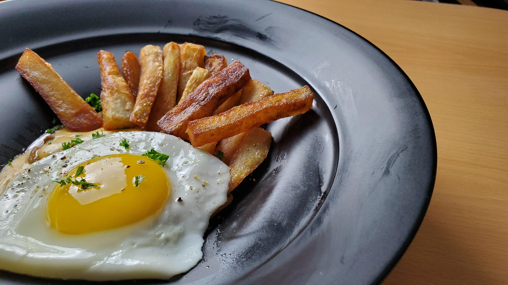

Eggs and Chips
Description
A staple dish here at Seventh Heaven. With its simple ingredients, its not too hard to make even down here in the Sector 7 Slums. A nice comfort food that is both delicious and filling, especially when made by out hostess Tifa!
Ingredients
- Potatoes
- Canola Oil
- Chopped Onions
- 2lbs Ground Beef (minced)
- Ground Cumin
- Chili Powder
- Cloves Ground
- Salt
- Pepper
- 1 Can of Tomato Sauce
- 1cup Kidney Beans
- Beef Stock
- 1 Egg
- Cheddar and Mozzarella for Serving
Steps
- Peel however many potatoes as you like
- Cut your peeled potatoes at both ends, and then into fours length wise
- Then cut each piece into desired size
- Soak the chips in a bowl of water for 30 minutes
- Drain the water and dry the chips thoroughly before next step
- Deep fry on medium high heat in canola oil
- Remove when they tan around the edges
- Stir fry chopped onions for a few minutes
- Drop in your minced beef
- Once the meat browns, season with ground cumin and cloves ground to your liking
- Continue stir frying with those spices
- Add salt, pepper and any other seasonings you wish
- Add the tomato sauce and the kidney beans and mix
- Add in a little beef stock and stir and let simmer until liquid thickens a bit
- Fry a sunny side up egg and let steam for a bit before plating
- Plate the chili and chips and melt some cheese on both to your liking
- Finally plate the egg and enjoy
(Credits) Youtube Channel: Lets Go Tamago
Back to Menu